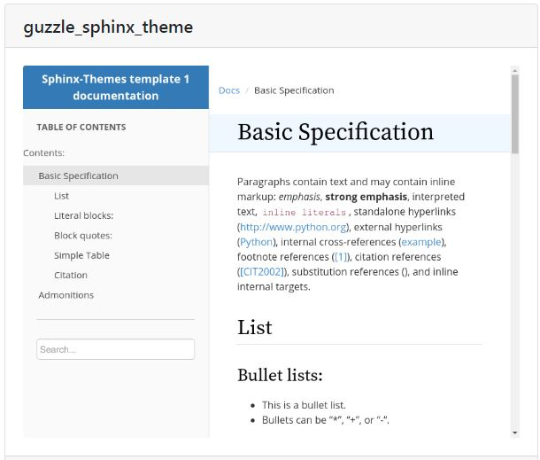
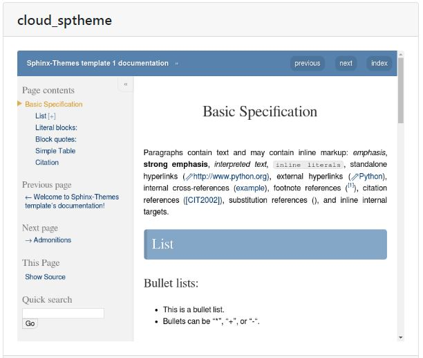

Sphinx¶
- Auteur
J.Soranzo
- Date
Octobre 2019
- Societe
VoLAB
- Entity
VoRoBoTics
Sommaire
Sphinx pour la documentation¶
{kind=link}
Voici mon utilisation de Sphinx !
Pourquoi ?¶
J’ai longtemps cherché un bon outil de documentation.
Quels sont mes critéres ?
A compléter.
Doc-O-Matic¶
Je le met ici mais je créerai un article plus tard quand j’aurai regardé de plus près
Oui mais non parce que c’est payant ! Même la version de base.
Au VoLAB¶
Méthode Pierre: voir sur son journal de manip 3
Que je complèterais par:
Créer le répertoire du projet
Créer à l’intérieur un répertoire “projet” et un autre “webdoc”
Dans projet créer _01-userDoc se placer dedans pour lancer sphinx-quickstart
Selon qu’on est sous Linux ou sous Windwos on peut effacer un des 2 make (make.bat pour Windwos)
Note
sphinx-quickstart crée automatiquement le répertoire source
Commencer le boulot après.
Retouches de conf.py:
master_doc = 'index'
exclude_patterns = ['_build', 'Thumbs.db', '.DS_Store']
html_theme = 'nature'
html_theme_options = {
"body_max_width" : "70%"
}
Retouches de index.rst
Si toctree il y a (ou doit y avoir):
.. toctree::
:maxdepth: 2
:caption: Articles:
:titlesonly:
Supprimer : * :ref:`modindex` (on fait pas du Python ;-)
css pas dans gh-pages¶
Mettre de le fichier .nojekill dans le répertoire source et pas dans le répertoire html ;-)
Ce fichier est utilisé par make html
Liens externe locaux¶
directive .. only et role :download:
Exemple doc pdf sphinx
Autre utilisation avec un word
Themes¶
Recherche d’un thème avec barre de navigation fixe
Note
Ce serait l’option stickysidebar bar https://www.sphinx-doc.org/en/master/usage/theming.html au moins pour le theme classic
Le pb est que les options ne sont pas commune d’un thème à l’autre.
testés¶
PSphinxTheme
Avertissement
Dans les premier ! Avec sidebar rétractable 5 colorations fournies. Theme difficile à installer sous Windows !!! Erreur dans setup.py (os supported arch Linux ! )
guzzle
Ne support pas body_max_width dommage
{kind=link}
cloud
Plutôt pas mal, beaucoup d’option mais je trouve l’écartement entre les lignes de mon header
- Auteur
J.Soranzo
- Date
Octobre 2019
- Societe
VoLAB
- Entity
VoRoBoTics
trop important !
{kind=link}
murray
Trop blanc mais intéressant pour son menu repliable.
A tester¶
catalystcloud
rtd Read The Doc https://sphinx-rtd-theme.readthedocs.io/en/stable/installing.html
Petits trucs¶
Autres astuces difficilement classable¶
7/3/20 J’ai trouvé ce site ou plutot ce MOOT de l’université de Grenoble :